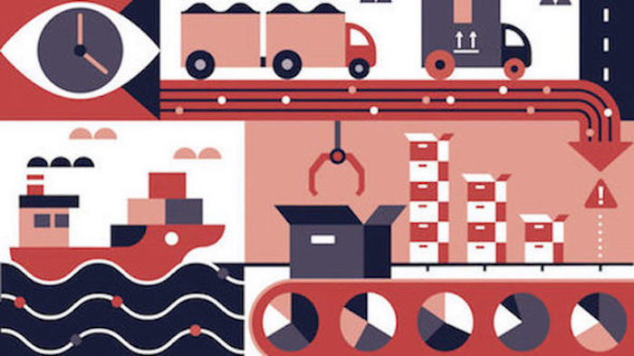

+ The Positives of Artificial Intelligence: Cognitive Supply Chains
"Cognitive supply chains that are able to predict and adapt in times of uncertainty are setto revolutionise trade, and will be a key competitive advantage in the coming years.
We’re at a unique moment in the evolution of the supply chain where advanced technologies have matured enough to match the proliferation of data.
The typical supply chain in 2018 accessed 50 times more data than just five years earlier.
Looking at the incivilities of online marketing and how tech companies are starting to progress.." towards more useful AI and biotechnologies
Click the link to read the full article:

Cognitive Supply Chains & AI
How the chaos in your life builds character
"It is important to harness the power of upheaval and understand that some good can come of very bad situations..Chaos in your life builds character because it makes you feel alive. The diversity of emotions you withstand when your life becomes unstable compels you to have a range of responses that you may not have had the opportunity to explore when things were going well."
Developing transactional leadership...Developing courage and the ability to express a well-rounded, candid, or forthright decision, especially in high pressure environments where a decision needs to be made quickly and effectively..
Click the link to read the full article:
Life Hack: Building Character
Book section
List of Books to check out, rent, or buy in a carousel scroll bar (Display to look like on B&N's new releases website or Movie's to choose from on Netflix..
Forbes Technology Trends for 2019: The Good, the Obvious and the Missing
"Gartner is a global research and advisory firm providing insights, advice, and tools for leaders in IT, Finance, HR, Customer Service and Support, Legal and Compliance, Marketing, Sales, and Supply Chain functions across the world. They host conferences, publish reports and through their consulting practice evangelize the technology trends they endlessly discuss in their travels.."
Click the link to read the full article:
Gartner's 10 Technology Trends for 2019